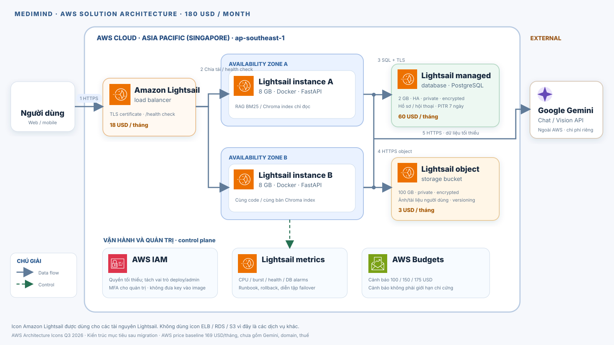

MediMind trên AWS
Kiến trúc mục tiêu cho ngân sách 180 USD/tháng và 20–100 người dùng đồng thời. Các thành phần lưu dữ liệu sức khỏe được tách khỏi hai máy ứng dụng. Cần sửa mã nguồn và kiểm thử tải trước khi vận hành theo sơ đồ này.

Mũi tên liền: luồng yêu cầu/dữ liệu. Mũi tên nét đứt: giám sát và điều khiển. Các tài nguyên Lightsail dùng chung icon Amazon Lightsail; icon ELB, RDS và S3 chỉ dành cho chính các dịch vụ đó nên không dùng ở đây.
Đối chiếu rubric
Tổng trọng số 3.2| Tiêu chí | Điểm | Thể hiện trong tài liệu |
|---|---|---|
| Chuẩn AWS service, icon, tên, mục đích và flow | 0.5 | Icon AWS Q3/2026; tên đầy đủ; mũi tên đánh số 1–5 và chú giải. |
| Thẩm mỹ diagram | 0.2 | SVG vector rõ nét, 2 AZ cân đối, đường dữ liệu tách khỏi control. |
| Operational Excellence | 0.5 | Health check, metrics, runbook, rollback. |
| Security | 0.5 | IAM, TLS, DB mã hóa, bucket private, xử lý dữ liệu sức khỏe. |
| Reliability | 0.5 | 2 AZ, HA DB, PITR, versioning, thử failover/restore. |
| Performance Efficiency | 0.5 | 2×8 GB, load test 20/50/100, CPU burst và Gemini quota. |
| Cost Optimization | 0.5 | Dự toán 169 USD, AWS Budgets và ngưỡng cảnh báo. |
| Sustainability | 0.0 | Ghi nhận trong checklist, không chấm. |
Dịch vụ và luồng
0.5 + 0.2- Người dùng → Lightsail Load Balancer: HTTPS 443, chứng chỉ TLS, kiểm tra
/health. - Load Balancer → 2 Lightsail instances: phân phối tới AZ A/B, chỉ gửi vào máy khỏe. Chặng nội bộ hiện giả định HTTP qua mạng riêng Lightsail; cần xác minh yêu cầu mã hóa từng chặng khi triển khai.
- FastAPI → Lightsail managed PostgreSQL: dữ liệu tài khoản, hồ sơ và hội thoại; kết nối TLS, DB private, HA và mã hóa.
- FastAPI → Lightsail object storage: ảnh/tài liệu người dùng, bucket private, HTTPS và versioning.
- FastAPI → Google Gemini: sinh câu trả lời và quét ảnh ở các luồng hỗ trợ; Google nằm ngoài AWS, cần giảm dữ liệu gửi đi.
Hiện trạng: repository đang dùng SQLite, ChromaDB và uploads cục bộ; sơ đồ là trạng thái sau migration.
Vì sao sơ đồ chính dùng Lightsail và Gemini?
| Thành phần bạn hỏi | Vai trò | Quyết định cho MediMind lúc này |
|---|---|---|
| VPS / Amazon Lightsail | Máy chủ ảo, đi kèm cấu hình mạng và lưu trữ đơn giản. | Đang có trong sơ đồ chính. Hai instance Lightsail ở hai AZ; Lightsail là sản phẩm VPS của AWS. |
| Amazon EC2 + Amazon VPC | Máy ảo và mạng ảo cho kiến trúc tùy chỉnh sâu hơn. | Phương án thay thế khi cần autoscaling, cấu hình mạng/HA sâu hơn hoặc vượt giới hạn Lightsail. Tài khoản Free plan mở 09/2026 chỉ cho phép một số loại EC2 được chọn; đổi sang EC2 không tự động rẻ hơn. |
| Amazon S3 | Object storage độc lập để lưu ảnh/tài liệu và backup. | Rất phù hợp khi chuyển uploads khỏi ổ đĩa cục bộ. Sơ đồ chi phí hiện dùng Lightsail object storage (dịch vụ khác, xây trên hạ tầng S3). Có thể chuyển sang Amazon S3 khi triển khai tầng IAM/EC2; cần sửa mã lưu tệp. |
| Amazon Bedrock | Gọi foundation model qua AWS. | Dự án hiện gọi Google Gemini; đổi model cần sửa provider, kiểm thử chat/vision và định giá token. Giữ Gemini để tránh phát sinh công và rủi ro trong đợt đầu. |
| Amazon Bedrock AgentCore | Runtime, memory, gateway và công cụ cho agent. | Chưa cần cho luồng RAG/chat hiện tại. AgentCore có thể dùng cả Gemini nhưng tính phí riêng; thêm khi đã có agent nhiều bước gọi công cụ thực sự. |
Các mục “phương án thay thế” không được vẽ như thành phần đang chạy, để sơ đồ không mô tả sai kiến trúc hay cộng chi phí giả.
Đánh giá nhận xét “quá đơn giản”
- Networking: đúng. Lightsail che bớt lớp VPC; sơ đồ này không chứng minh kỹ năng thiết kế subnet, route table, NAT hay security group của Core AWS.
- Secrets: đúng. Gemini API key và DB credentials cần nơi lưu, cơ chế cấp quyền, rotation và quy trình nạp vào ứng dụng. Chỉ thêm icon Secrets Manager vào sơ đồ chưa giải quyết cách Lightsail xác thực để đọc secret.
- Auto Scaling: đúng đối với máy ứng dụng. Lightsail load balancer có thể tự đáp ứng tăng lưu lượng, nhưng không tự tạo instance thứ ba hoặc thứ tư kiểu EC2 Auto Scaling Group.
- CDN/WAF: WAF không gắn trực tiếp Lightsail Load Balancer. Từ 10/2026, Lightsail CDN distribution gói 10 USD/tháng có WAF tích hợp và có thể dùng Lightsail Load Balancer làm origin. Nếu bật, tổng cơ bản thành 179 USD/tháng, chỉ còn 1 USD dự phòng; chỉ cache nội dung tĩnh, không cache dữ liệu sức khỏe/chat.
- Cognito: chỉ thêm khi đổi luồng đăng nhập của ứng dụng; không phải lớp bảo vệ có thể bật bằng một icon.
Operational Excellence
0.5Vấn đề: một lần phát hành lỗi có thể ảnh hưởng cả hai máy; số liệu và quy trình xử lý hiện chưa được chứng minh.
- Triển khai tuần tự A rồi B, xác nhận
/healthtrước khi chuyển tiếp; lưu bản image cũ để rollback. - Theo dõi Lightsail CPU/burst, RAM qua agent nếu cần, tình trạng LB, DB và lỗi ứng dụng; cảnh báo người vận hành.
- Log cấu trúc, xoay vòng và xóa định kỳ; loại bỏ dữ liệu sức khỏe và API key khỏi log.
- Runbook: lỗi Gemini, DB failover, bucket lỗi, hết credit, rollback và khôi phục.
Security
0.5Vấn đề: hồ sơ có số điện thoại, ngày sinh, địa chỉ và thông tin sức khỏe; rủi ro lộ từ tệp tải lên, log hoặc API ngoài AWS.
- IAM theo quyền tối thiểu, MFA cho admin, phân quyền triển khai và vận hành; không đóng gói bí mật vào image.
- HTTPS ở cổng công khai; PostgreSQL private và xác thực TLS; bucket private, mã hóa phía máy chủ, chỉ cấp quyền cho máy ứng dụng.
- Tệp tạm trên instance phải xóa sau khi đưa vào bucket; cấu hình thời hạn lưu và quyền xóa của người dùng.
- Chỉ gửi dữ liệu cần thiết cho Gemini; thông báo rõ luồng xử lý dữ liệu và rà soát hợp đồng/chính sách của nhà cung cấp.
Reliability
0.5Vấn đề: hai máy chỉ thật sự thay thế nhau khi không còn trạng thái phiên hoặc tệp riêng trên từng máy.
- Ứng dụng ở 2 AZ; Lightsail LB chỉ định tuyến tới instance khỏe; PostgreSQL HA có standby ở AZ khác.
- Database có point-in-time restore; bucket bật versioning và hạn chế xóa nhầm.
- Đề xuất mục tiêu kiểm thử: RTO ≤ 60 phút, RPO ≤ 24 giờ cho dữ liệu tệp; đo thực tế trong diễn tập.
- Diễn tập mất một instance, DB failover và khôi phục dữ liệu trước khi công bố khả năng sẵn sàng.
Performance Efficiency
0.5Vấn đề: 8 GB RAM không xác nhận được 100 yêu cầu xử lý cùng lúc; Lightsail 8 GB có CPU baseline 30%.
- Ban đầu tắt BGE reranker và EasyOCR cục bộ; dùng Gemini Vision ở những luồng mã nguồn đã hỗ trợ.
- Kiểm thử 20, 50, 100 yêu cầu đang hoạt động bằng dữ liệu giả lập; ghi p95, lỗi, CPU/burst, RAM, số kết nối DB và quota Gemini.
- Nếu CPU vượt baseline kéo dài hoặc p95 không đạt mục tiêu, tăng cấu hình/điều chỉnh kiến trúc và tính lại ngân sách trước khi mở tải.
- Chroma index chỉ đọc, cùng phiên bản ở hai máy; cập nhật tài liệu bằng phát hành phiên bản mới.
Cost Optimization
0.5| Dịch vụ | USD/tháng |
|---|---|
| 2 × Lightsail 8 GB | 88 |
| Lightsail Load Balancer | 18 |
| Lightsail PostgreSQL 2 GB HA mã hóa | 60 |
| Lightsail object bucket 100 GB | 3 |
| Tổng cơ bản | 169 |
| Dự phòng tới mức 180 USD | 11 |
- AWS Budgets cảnh báo 100, 150, 175 USD; kiểm tra credit còn lại hằng tuần. Cảnh báo không phải giới hạn chi cứng.
- Chưa gồm Gemini API, tên miền, SMS/email, thuế và lưu lượng/dung lượng vượt gói.
- 11 USD dự phòng rất mỏng; nếu nâng cả hai máy lên 16 GB, thiết kế sẽ vượt 180 USD.
Sustainability
0.0 · Không chấmĐã ghi nhận theo AWS Well-Architected. Sau load test, chọn kích cỡ máy vừa đủ, tránh tài nguyên nhàn rỗi và xóa bản sao dữ liệu không cần thiết.
Nguồn và phạm vi
Biểu tượng lấy từ AWS Architecture Icons Q3/2026. AWS Well-Architected gồm sáu trụ cột; bảng trên bám theo đúng tiêu chí chấm của bạn. Đây là đánh giá thiết kế, chưa phải chứng nhận ứng dụng đã đáp ứng tải, bảo mật hay RTO/RPO.
- AWS Well-Architected Framework
- Giá và cấu hình Amazon Lightsail
- Lightsail load balancer và multi-AZ
- Lightsail HA database
- Lightsail bucket security
- AWS reliability: backup/restore
- AWS performance: load testing
- Free Tier credit và thời hạn
- Free plan EC2 instance types và Lightsail
- AgentCore hỗ trợ Gemini và các mô hình khác
- Giá Bedrock AgentCore
- Các resource có thể gắn AWS WAF
- Lightsail CDN distribution WAF
- Lightsail CDN distribution plan 10 USD
- Giá NAT Gateway
- Giá Secrets Manager